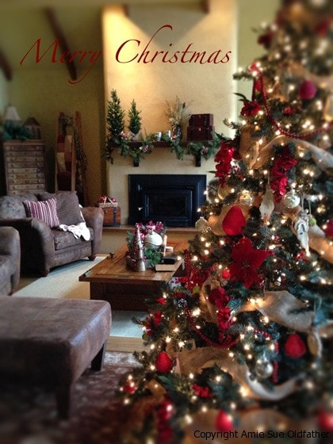

Happy Holidays! A Special Thank You & an eBook Sale!

I wanted to take a moment during this busy time of year, sit down, and share with of you what a blessing this site has become for me. I originally started Nouveau Raw back in 2008 as a way to keep my own personal recipes organized and for my friends and family. Little did I know back then that my “friends” would expand to over 3,000 of you and reach all corners of the globe!
My passion for healthy foods continues to grow stronger and stronger with each recipe I create. And to have all of you to share them with just blesses me beyond measure. Every morning I wake up, kiss my husband, then snuggle on the couch as we share a cup of coffee. Then as all my faculties begin to come into focus, I open up my computer and browse through my emails. And much to my delight, everyday, I find messages from so many of you. I am so thankful, you inspire me, encourage me, challenge me and bring great joy to my heart. I never knew that starting this site would have such an impact on me. Thank you all so much, I am deeply humbled.
I know many of you love to give homemade Christmas gifts and this is a time of year when we are invited to potlucks, dinner parties, cookie exchanges, office parties, and so forth. I am not sure if you have checked out my eBook, but it contains step by step instructions with photos to help you create beautiful edible art in the form of veggie bouquets. A show stopper for sure! It will help you put a whole new spin on bringing the “typical” veggie tray and become the star of any party! As my gift to you, my loyal readers, I am offering a special holiday, 50% off, discount on my eBook. You can purchase it from now till December 31st, 2012 for only $3.99. This would also make a wonderful gift for someone special in your life as well. In case you haven’t seen a picture of what you can create out pure veggies, see the photo below. If that isn’t inspirational, I don’t know what is. :) Many blessings and happy holidays! Amie Sue
To purchase the Edible Veggie Ebook, click on the photo below. It will direct you to the order page. Be sure to type in the discount code, “edible art”. If you don’t put the code in, you won’t get the discount. This will drop the price from $7.99 to $3.99. Enjoy!

© AmieSue.com